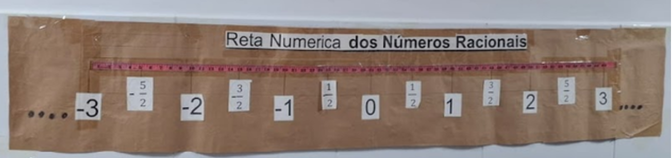

Reta Numérica dos Números Racionais: Positivos, Negativos e Opostos
Plano de aula estruturado para a consolidação dos conceitos de origem, simetria, frações impróprias e ordenação no conjunto dos racionais.

Materiais Necessários
Tira longa de papel kraft de 2,5 a 3 metros afixada na parede para permitir os dois sentidos a partir da origem.
Fita métrica ou trena afixada na borda superior com marcação inicial no zero ($0$).
Cartões com título, reticências ($\dots$), inteiros ($-3, -2, -1, 0, 1, 2, 3$) e frações ($-\frac{5}{2}, -\frac{3}{2}, -\frac{1}{2}, \frac{1}{2}, \frac{3}{2}, \frac{5}{2}$).
Fita crepe e canetas hidrográficas para anotações e diferenciação dos sinais.
Habilidades do Currículo (BNCC)
Comparar e ordenar números inteiros em diferentes contextos, incluindo o histórico, associá-los a pontos da reta numérica e utilizá-los em situações que envolvam adição e subtração.
Comparar e ordenar números racionais em diferentes contextos e associá-los a pontos da reta numérica.
Série Indicada & Aplicação Pedagógica
7º Ano do Ensino Fundamental
Expansão para os números negativos, compreensão de números opostos e ordenação linear completa.
8º e 9º Ano (Recomposição)
Superação de concepções equivocadas comuns em relação à magnitude de números negativos e mistos.
Como Usar com os Estudantes (Passo a Passo)
Fixação da Origem ($0$) e Reticências
Fixe o painel de papel pardo na parede. Posicione a trena e defina o zero ($0$) bem no centro. Fixe os cartões de reticências ($\dots$) nas extremidades para evidenciar a infinitude do conjunto dos números racionais.
Mapeamento dos Números Inteiros
Convide os estudantes a posicionarem primeiro os inteiros ($-3, -2, -1, 1, 2, 3$), mantendo distâncias rigorosamente idênticas entre cada unidade (por exemplo, 20 cm). Enfatize que à esquerda de $0$ ficam os valores negativos e à direita os positivos.
Desafio das Frações Positivas e Negativas
Distribua os cartões com frações ($-\frac{5}{2}, -\frac{3}{2}, -\frac{1}{2}, \frac{1}{2}, \frac{3}{2}, \frac{5}{2}$) entre os grupos. Os estudantes devem converter para número misto ou decimal para encontrar a posição exata:
Exemplo Negativo: $-\frac{5}{2} = -2{,}5 = -2\frac{1}{2} \rightarrow$ Fica situado exatamente na metade entre $-2$ e $-3$ (e não entre $-1$ e $-2$).
Exemplo Positivo: $+\frac{5}{2} = +2{,}5 = +2\frac{1}{2} \rightarrow$ Fica situado na metade entre $2$ e $3$.
Sistematização da Simetria e Discussão Coletiva
Discuta o conceito de números simétricos ou opostos (como $\frac{3}{2}$ e $-\frac{3}{2}$), observando que ambos estão à mesma distância da origem ($0$), porém em sentidos opostos.
- "Por que $-\frac{5}{2}$ fica entre $-2$ e $-3$, e não entre $-1$ e $-2$?"
- "Qual número é maior: $-1$ ou $-\frac{3}{2}$ ($-1{,}5$)? Por quê?"
- "O que significam as reticências ($\dots$) nas duas pontas da reta numérica?"
- "O que os números $\frac{1}{2}$ e $-\frac{1}{2}$ têm em comum na reta?"
Guia de Referência de Posição (Origem em $0\text{ cm}$)
| Fração / Inteiro | Representação Decimal | Número Misto | Posição Relativa à Origem ($0$) |
|---|---|---|---|
| $-3$ | $-3{,}0$ | — | 3 unidades à esquerda de 0 |
| $-\frac{5}{2}$ | $-2{,}5$ | $-2\frac{1}{2}$ | 2,5 unidades à esquerda de 0 (entre -2 e -3) |
| $-2$ | $-2{,}0$ | — | 2 unidades à esquerda de 0 |
| $-\frac{3}{2}$ | $-1{,}5$ | $-1\frac{1}{2}$ | 1,5 unidades à esquerda de 0 (entre -1 e -2) |
| $-1$ | $-1{,}0$ | — | 1 unidade à esquerda de 0 |
| $-\frac{1}{2}$ | $-0{,}5$ | — | 0,5 unidade à esquerda de 0 (entre 0 e -1) |
| $0$ | $0{,}0$ | — | Origem (Centro de Referência) |
| $\frac{1}{2}$ | $+0{,}5$ | — | 0,5 unidade à direita de 0 (entre 0 e 1) |
| $1$ | $+1{,}0$ | — | 1 unidade à direita de 0 |
| $\frac{3}{2}$ | $+1{,}5$ | $1\frac{1}{2}$ | 1,5 unidades à direita de 0 (entre 1 e 2) |
| $2$ | $+2{,}0$ | — | 2 unidades à direita de 0 |
| $\frac{5}{2}$ | $+2{,}5$ | $2\frac{1}{2}$ | 2,5 unidades à direita de 0 (entre 2 e 3) |
| $3$ | $+3{,}0$ | — | 3 unidades à direita de 0 |